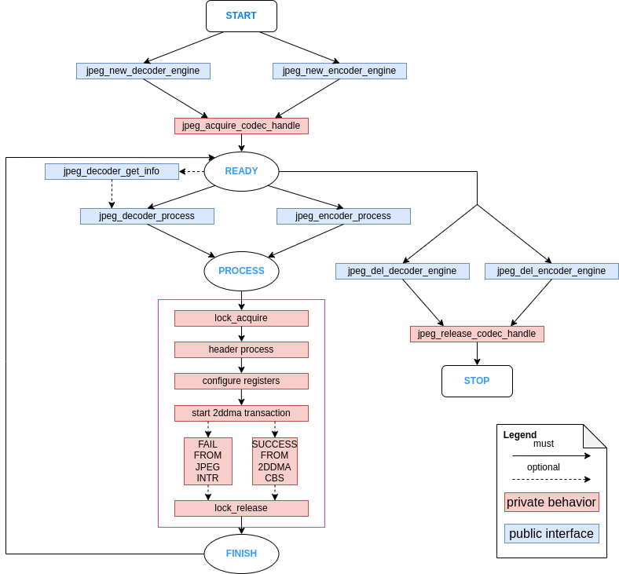
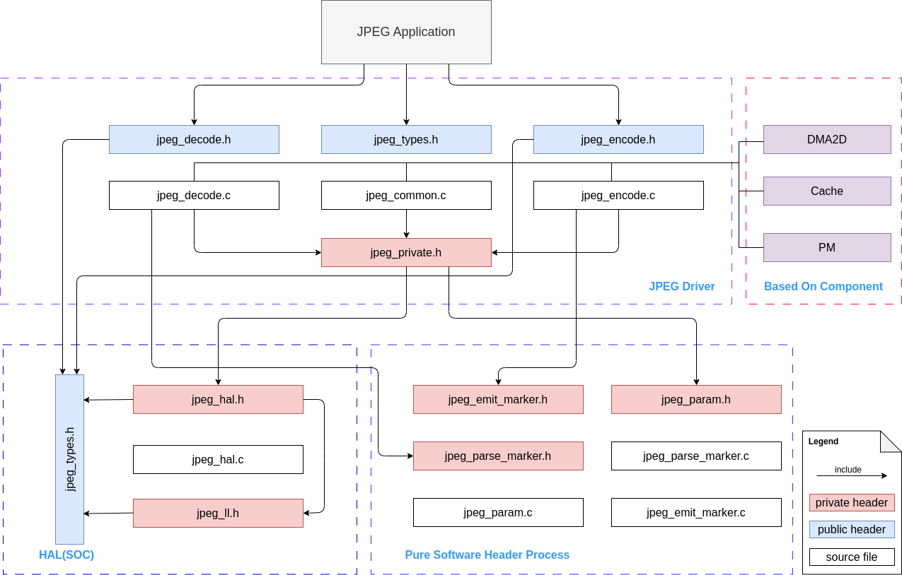

JPEG Encoder and Decoder
Introduction
JPEG is a commonly used method of lossy compression for digital images, particularly for those images produced by digital photography. The compression level varies with changes in image size and compression quality. JPEG typically achieves 10:1 compression with little perceptible loss in image quality.
JPEG codec on ESP32-P4 is an image codec, which is based on the JPEG baseline standard, for compressing and decompressing images to reduce the bandwidth required to transmit images or the space required to store images, making it possible to process large-resolution images. But please note, at one time, the codec engine can only work as either encoder or decoder.
For more hardware features of JPEG codec, please refer to the JPEG codec section in ESP32-P4 Technical Reference Manual, for more details.
Functional Overview
This document covers the following sections:
Resource Allocation - covers how to allocate JPEG resources with properly set of configurations. It also covers how to recycle the resources when they finished working.
Finite State Machine - covers JPEG workflow. Introduce how jpeg driver uses internal resources and its software process.
JPEG Decoder Engine - covers behavior of JPEG decoder engine. Introduce how to use decoder engine functions to decode an image (from jpg format to raw format).
JPEG Encoder Engine - covers behavior of JPEG encoder engine. Introduce how to use encoder engine functions to encode an image (from raw format to jpg format).
Performance Overview - covers encoder and decoder performance.
Pixel Storage Layout for Different Color Formats - covers color space order overview required in this JPEG decoder and encoder.
Thread Safety - lists which APIs are guaranteed to be thread safe by the driver.
Power Management - describes how JPEG driver would be affected by power consumption.
Usage Under Encryption - describes how to use the JPEG codec correctly when flash/PSRAM encryption is enabled.
Kconfig Options - lists the supported Kconfig options that can bring different effects to the driver.
Resource Allocation
Install JPEG decoder engine
JPEG decoder engine requires the configuration that specified by jpeg_decode_engine_cfg_t.
If the configurations in jpeg_decode_engine_cfg_t is specified, users can call jpeg_new_decoder_engine() to allocate and initialize a JPEG decoder engine. This function will return an JPEG decoder handle if it runs correctly. You can take following code as reference.
jpeg_decoder_handle_t decoder_engine;
jpeg_decode_engine_cfg_t decode_eng_cfg = {
.intr_priority = 0,
.timeout_ms = 40,
};
ESP_ERROR_CHECK(jpeg_new_decoder_engine(&decode_eng_cfg, &decoder_engine));
Uninstall JPEG decoder engine
If a previously installed JPEG engine is no longer needed, it's recommended to recycle the resource by calling jpeg_del_decoder_engine(), so that the underlying hardware is released.
ESP_ERROR_CHECK(jpeg_del_decoder_engine(decoder_engine));
Install JPEG encoder engine
The JPEG encoder engine requires the configuration specified by jpeg_encode_engine_cfg_t.
If the configurations in jpeg_encode_engine_cfg_t is specified, users can call jpeg_new_encoder_engine() to allocate and initialize a JPEG encoder engine. This function will return an JPEG encoder handle if it runs correctly. You can take following code as reference.
jpeg_encoder_handle_t encoder_engine;
jpeg_encode_engine_cfg_t encode_eng_cfg = {
.intr_priority = 0,
.timeout_ms = 40,
};
ESP_ERROR_CHECK(jpeg_new_encoder_engine(&encode_eng_cfg, &encoder_engine));
Uninstall JPEG encoder engine
If a previously installed JPEG engine is no longer needed, it's recommended to recycle the resource by calling jpeg_del_encoder_engine(), so that the underlying hardware is released.
ESP_ERROR_CHECK(jpeg_del_encoder_engine(encoder_engine));
Finite State Machine
The JPEG driver usage of hardware resources and its process workflow are shown in the following graph:

JPEG finite state machine
JPEG Decoder Engine
After installing the JPEG decoder driver by jpeg_new_decoder_engine(), ESP32-P4 is ready to decode JPEG pictures by jpeg_decoder_process(). jpeg_decoder_process() is flexible for decoding different types of pictures by a configurable parameter called jpeg_decode_cfg_t.
Moreover, our JPEG decoder API provides a helper function which helps you get the basic information of your given image. Calling jpeg_decoder_get_info() would return the picture information structure called jpeg_decoder_get_info(). If you already know the picture basic information, this functions is unnecessary to be called.
The format conversions supported by this driver are listed in the table below:
Format of the already compressed image |
Format after decompressing |
|---|---|
YUV444 |
RGB565/RGB888 |
YUV422 |
RGB565/RGB888 |
YUV420 |
RGB565/RGB888 |
GRAY |
GRAY |
Overall, You can take following code as reference, the code is going to decode a 1080*1920 picture.
jpeg_decode_cfg_t decode_cfg_rgb = {
.output_format = JPEG_DECODE_OUT_FORMAT_RGB888,
.rgb_order = JPEG_DEC_RGB_ELEMENT_ORDER_BGR,
};
size_t rx_buffer_size;
jpeg_decode_memory_alloc_cfg_t rx_mem_cfg = {
.buffer_direction = JPEG_DEC_ALLOC_OUTPUT_BUFFER,
};
const uint8_t *bit_stream = embedded_jpeg_start;
uint8_t *out_buf = (uint8_t*)jpeg_alloc_decoder_mem(1920 * 1088 * 3, &rx_mem_cfg, &rx_buffer_size);
jpeg_decode_picture_info_t header_info;
ESP_ERROR_CHECK(jpeg_decoder_get_info(bit_stream, bit_stream_size, &header_info));
uint32_t out_size = 0;
ESP_ERROR_CHECK(jpeg_decoder_process(decoder_engine, &decode_cfg_rgb, bit_stream, bit_stream_size, out_buf, &out_size));
There are some tips that can help you use this driver more accurately:
In above code, you should make sure the output buffer out_buf follows the driver's alignment requirements. We provide a helper function
jpeg_alloc_decoder_mem()to help you allocate a buffer with aligned size and address.The content of bit_stream should not be changed until
jpeg_decoder_process()returns. This input buffer can come directly from flash-mapped embedded data or any other memory region that stays readable for the full call.If the source JPEG uses YUV420 or YUV422 sampling, the decoded output dimensions can be padded up to 16-pixel boundaries. For example, if the visible image size is 1080*1920, the decoder may require an output buffer sized for 1088*1920 pixels. This comes from the JPEG block layout, so please provide enough output buffer memory for the padded image, not only for the visible width and height.
JPEG Encoder Engine
After installing the JPEG encoder driver by jpeg_new_encoder_engine(), ESP32-P4 is ready to encode JPEG pictures by jpeg_encoder_process(). jpeg_encoder_process() is flexible for decoding different types of pictures by a configurable parameter called jpeg_encode_cfg_t.
The format conversions supported by this driver are listed in the table below:
Format of Original Image |
Down sampling method |
|---|---|
RGB565/RGB888 |
YUV444/YUV422/YUV420 |
GRAY |
GRAY |
Below is the example of code that encodes a 1280x720 picture from an embedded raw buffer:
size_t raw_size_720p = EXAMPLE_WIDTH * EXAMPLE_HEIGHT * 3; /* 1280x720 bgr24 frame */
jpeg_encode_cfg_t enc_config = {
.src_type = JPEG_ENCODE_IN_FORMAT_RGB888,
.sub_sample = JPEG_DOWN_SAMPLING_YUV422,
.image_quality = 80,
.width = 1280,
.height = 720,
.pixel_reverse = false, // Whether to reverse the pixel order of the input image, or pixel order detail please refer to technical reference manual
};
jpeg_encode_memory_alloc_cfg_t rx_mem_cfg = {
.buffer_direction = JPEG_ENC_ALLOC_OUTPUT_BUFFER,
};
size_t jpg_buffer_size = 0;
uint8_t *jpg_buf_720p = (uint8_t*)jpeg_alloc_encoder_mem(raw_size_720p / 10, &rx_mem_cfg, &jpg_buffer_size);
if (jpg_buf_720p == NULL) {
ESP_LOGE(TAG, "alloc jpg_buf_720p error");
return;
}
/* The current JPEG encoder input path expects BGR24-style raw bytes for
* JPEG_ENCODE_IN_FORMAT_RGB888. The embedded asset can be read directly
* from flash as long as it remains valid until this call returns. */
ESP_ERROR_CHECK(jpeg_encoder_process(jpeg_handle, &enc_config, embedded_bgr24_start, raw_size_720p, jpg_buf_720p, jpg_buffer_size, &jpg_size_720p));
There are some tips that can help you use this driver more accurately:
In the above code, the output buffer jpg_buf_720p should be allocated by calling
jpeg_alloc_encoder_mem(), because the JPEG bitstream buffer must satisfy the driver's alignment requirements.The content pointed to by embedded_bgr24_start should not be changed until
jpeg_encoder_process()returns. This input buffer can come from flash-mapped embedded data or another memory region that stays readable for the full call.For
JPEG_ENCODE_IN_FORMAT_RGB888, the current driver expects the raw input bytes in a BGR24-style layout. Supplying RGB24 raw data would swap the red and blue channels in the encoded JPEG.The compression ratio depends on the chosen image_quality and the content of the image itself. Generally, a higher image_quality value obviously results in better image quality but a smaller compression ratio. As for the image content, it is hard to give any specific guidelines, so this question is out of the scope of this document. Generally, the baseline JPEG compression ratio can vary from 40:1 to 10:1. Please take the actual situation into account.
Performance Overview
This section provides some measurements of the decoder and encoder performance. The data presented in the tables below gives the average values of decoding or encoding a randomly chosen picture fragments for 50 times. All tests were performed at a CPU frequency of 360MHz and a SPI RAM clock frequency of 200MHz. Only JPEG related code is run in this test, no other modules are involved (e.g. USB Camera, etc.).
Both decoder and encoder are not cause too much CPU involvement. Only header parse causes CPU source. Calculations related to JPEG compression, such as DCT, quantization, huffman encoding/decoding, etc., are done entirely in hardware.
JPEG decoder performance
JPEG Height |
JPEG Width |
Pixel Format in [1] |
Pixel Format out [2] |
Performance (fps) |
|---|---|---|---|---|
1080 |
1920 |
YUV422 |
RGB888/RGB565 |
48 |
720 |
1280 |
YUV422 |
RGB888/RGB565 |
109 |
480 |
800 |
YUV422 |
RGB888/RGB565 |
253 |
480 |
640 |
YUV422 |
RGB888/RGB565 |
307 |
480 |
320 |
YUV422 |
RGB888/RGB565 |
571 |
720 |
1280 |
GRAY |
GRAY |
161 |
JPEG encoder performance
JPEG Height |
JPEG Width |
Pixel Format in [3] |
Pixel Format out [4] |
Performance (fps) |
|---|---|---|---|---|
1080 |
1920 |
RGB888 |
YUV422 |
26 |
1080 |
1920 |
RGB565 |
YUV422 |
36 |
1080 |
1920 |
RGB565 |
YUV420 |
40 |
1080 |
1920 |
RGB565 |
YUV444 |
24 |
1080 |
1920 |
RGB888 |
YUV422 |
26 |
720 |
1280 |
RGB565 |
YUV420 |
88 |
720 |
1280 |
RGB565 |
YUV444 |
55 |
720 |
1280 |
RGB565 |
YUV422 |
81 |
480 |
800 |
RGB888 |
YUV420 |
142 |
640 |
800 |
RGB888 |
YUV420 |
174 |
480 |
320 |
RGB888 |
YUV420 |
315 |
720 |
1280 |
GRAY |
GRAY |
163 |
Pixel Storage Layout for Different Color Formats
The encoder and decoder described in this guide use the same uncompressed raw image formats (RGB, YUV). Therefore, the encoder and decoder are not discussed separately in this section. The pixel layout of the following formats applies to the input direction of the encoder and the output direction of the decoder (if supported). The specific pixel layout is shown in the following figure:
RGB888
In the following picture, each small block means one bit.
RGB888 pixel order
For RGB888, the order can be changed via jpeg_decode_cfg_t::rgb_order sets the pixel to RGB order.
RGB888 pixel big endian order
RGB565
In the following picture, each small block means one bit.
RGB565 pixel order
For RGB565, the order can be changed via jpeg_decode_cfg_t::rgb_order sets the pixel to RGB order.
RGB565 pixel big endian order
YUV444
In the following picture, each small block means one byte.
YUV444 pixel order
YUV422
In the following picture, each small block means one byte.
YUV422 pixel order
YUV420
In the following picture, each small block means one byte.
YUV420 pixel order
Thread Safety
The factory function jpeg_new_decoder_engine(), jpeg_decoder_get_info(), jpeg_decoder_process(), and jpeg_del_decoder_engine() are guaranteed to be thread safe by the driver, which means, user can call them from different RTOS tasks without protection by extra locks.
Power Management
When power management is enabled (i.e., CONFIG_PM_ENABLE is set), the system needs to adjust or stop the source clock of JPEG to enter Light-sleep, thus potentially changing the JPEG decoder or encoder process. This might lead to unexpected behavior in hardware calculation. To prevent such issues, entering Light-sleep is disabled for the time when JPEG encoder or decoder is working.
Whenever the user is decoding or encoding via JPEG (i.e., calling jpeg_encoder_process() or jpeg_decoder_process()), the driver guarantees that the power management lock is acquired by setting it to esp_pm_lock_type_t::ESP_PM_CPU_FREQ_MAX. Once the encoding or decoding is finished, the driver releases the lock and the system can enter Light-sleep.
Usage Under Encryption
The JPEG codec moves data via the 2D-DMA, and the JPEG codec cannot process encrypted data. Therefore, when PSRAM encryption is enabled, the JPEG input/output buffers must reside in an unencrypted memory region, otherwise encoding/decoding fails.
To support the encrypted scenario, the driver does the following:
When
CONFIG_SPIRAM_ENC_EXEMPTis enabled,jpeg_alloc_decoder_mem()andjpeg_alloc_encoder_mem()allocate buffers from the unencrypted PSRAM region (MALLOC_CAP_SPIRAM_NO_ENC) automatically.The allocated buffers satisfy both the cache line alignment and the byte alignment required by the 2D-DMA.
Please note the following when using it:
It is recommended to always allocate buffers via
jpeg_alloc_encoder_mem()/jpeg_alloc_decoder_mem()to ensure correct alignment and memory region.The size of the unencrypted region is determined by
CONFIG_SPIRAM_ENC_EXEMPT_SIZE. Since the JPEG buffer size depends on the image resolution and cannot be predicted automatically, configure it according to the largest image you actually process. If the region is insufficient, the allocation fails and an error log is printed, suggesting to enlargeCONFIG_SPIRAM_ENC_EXEMPT_SIZE. Also note that this value must not be greater than or equal to the actual PSRAM size, otherwise the unencrypted region is disabled.
Kconfig Options
CONFIG_JPEG_ENABLE_DEBUG_LOG is used to enable the debug log at the cost of increased firmware binary size.
Maintainers' Notes
The JPEG driver usage of hardware resources and its dependency status are shown in the following graph:

JPEG driver file structure
Application Examples
peripherals/jpeg/jpeg_decode demonstrates how to use the JPEG hardware decoder to parse one embedded JPEG, decode it into RGB888, stream the raw output as base64 over UART, and validate the result with pytest.
peripherals/jpeg/jpeg_encode demonstrates how to use the JPEG hardware encoder to encode an embedded 720p raw picture, stream the JPEG as base64 over UART, and validate the result with pytest.
API Reference
Header File
This header file can be included with:
#include "driver/jpeg_decode.h"
This header file is a part of the API provided by the
esp_driver_jpegcomponent. To declare that your component depends onesp_driver_jpeg, add the following to your CMakeLists.txt:REQUIRES esp_driver_jpeg
or
PRIV_REQUIRES esp_driver_jpeg
Functions
-
esp_err_t jpeg_new_decoder_engine(const jpeg_decode_engine_cfg_t *dec_eng_cfg, jpeg_decoder_handle_t *ret_decoder)
Acquire a JPEG decode engine with the specified configuration.
This function acquires a JPEG decode engine with the specified configuration. The configuration parameters are provided through the
dec_eng_cfgstructure, and the resulting JPEG decoder handle is returned through theret_decoderpointer.- Parameters:
dec_eng_cfg -- [in] Pointer to the JPEG decode engine configuration.
ret_decoder -- [out] Pointer to a variable that will receive the JPEG decoder handle.
- Returns:
ESP_OK: JPEG decoder initialized successfully.
ESP_ERR_INVALID_ARG: JPEG decoder initialization failed because of invalid argument.
ESP_ERR_NO_MEM: Create JPEG decoder failed because of out of memory.
-
esp_err_t jpeg_decoder_get_info(const uint8_t *bit_stream, uint32_t stream_size, jpeg_decode_picture_info_t *picture_info)
Helper function for getting information about a JPEG image.
This function analyzes the provided JPEG image data and retrieves information about the image, such as its width, height. The image data is specified by the
bit_streampointer and thestream_sizeparameter. The resulting image information is returned through thepicture_infostructure.Note
This function doesn't depend on any jpeg hardware, it helps user to know jpeg information from jpeg header. For example, user can get picture width and height via this function and malloc a reasonable size buffer for jpeg engine process.
- Parameters:
bit_stream -- [in] Pointer to the buffer containing the JPEG image data.
stream_size -- [in] Size of the JPEG image data in bytes. Note that parse beginning partial of picture also works, but the beginning partial should be enough given.
picture_info -- [out] Pointer to the structure that will receive the image information.
- Returns:
ESP_OK: JPEG decoder get jpg image header successfully.
ESP_ERR_INVALID_ARG: JPEG decoder get header info failed because of invalid argument.
-
esp_err_t jpeg_decoder_process(jpeg_decoder_handle_t decoder_engine, const jpeg_decode_cfg_t *decode_cfg, const uint8_t *bit_stream, uint32_t stream_size, uint8_t *decode_outbuf, uint32_t outbuf_size, uint32_t *out_size)
Process a JPEG image with the specified decoder instance.
This function processes the provided JPEG image data using the specified JPEG decoder instance. The input JPEG image data is specified by the
bit_streampointer and thestream_sizeparameter. The resulting decoded image data is written to thedecode_outbufbuffer, and the length of the output image data is returned through theout_sizepointer.Note
1.Please make sure that the content of
bit_streampointer cannot be modified until this function returns. 2.For JPEGs encoded with YUV420 or YUV422 sampling, the decoded output dimensions can be padded to 16-pixel boundaries by the JPEG block layout. Make suredecode_outbufis large enough for that padded output size, not only for the visible width and height.- Parameters:
decoder_engine -- [in] Handle of the JPEG decoder instance to use for processing.
decode_cfg -- [in] Config structure of decoder.
bit_stream -- [in] Pointer to the buffer containing the input JPEG image data.
stream_size -- [in] Size of the input JPEG image data in bytes.
decode_outbuf -- [in] Pointer to the buffer that will receive the decoded image data.
outbuf_size -- [in] The size of
decode_outbufout_size -- [out] Pointer to a variable that will receive the length of the output image data.
- Returns:
ESP_OK: JPEG decoder process successfully.
ESP_ERR_INVALID_ARG: JPEG decoder process failed because of invalid argument.
-
esp_err_t jpeg_del_decoder_engine(jpeg_decoder_handle_t decoder_engine)
Release resources used by a JPEG decoder instance.
This function releases the resources used by the specified JPEG decoder instance. The decoder instance is specified by the
decoder_engineparameter.- Parameters:
decoder_engine -- Handle of the JPEG decoder instance to release resources for.
- Returns:
ESP_OK: Delete JPEG decoder successfully.
ESP_ERR_INVALID_ARG: Delete JPEG decoder failed because of invalid argument.
-
void *jpeg_alloc_decoder_mem(size_t size, const jpeg_decode_memory_alloc_cfg_t *mem_cfg, size_t *allocated_size)
A helper function to allocate memory space for JPEG decoder.
- Parameters:
size -- [in] The size of memory to allocate.
mem_cfg -- [in] Memory configuration for memory allocation
allocated_size -- [out] Actual allocated buffer size.
- Returns:
Pointer to the allocated memory space, or NULL if allocation fails.
Structures
-
struct jpeg_decode_cfg_t
Configuration parameters for a JPEG decoder image process.
Public Members
-
jpeg_dec_output_format_t output_format
JPEG decoder output format
-
jpeg_dec_rgb_element_order_t rgb_order
JPEG decoder output order
-
jpeg_yuv_rgb_conv_std_t conv_std
JPEG decoder yuv->rgb standard
-
jpeg_dec_output_format_t output_format
-
struct jpeg_decode_engine_cfg_t
Configuration parameters for the JPEG decoder engine.
Public Members
-
int intr_priority
JPEG interrupt priority, if set to 0, driver will select the default priority (1,2,3).
-
int timeout_ms
JPEG timeout threshold for handling a picture, should larger than valid decode time in ms. For example, for 30fps decode, this value must larger than 34. -1 means wait forever
-
uint32_t allow_pd
If set, the driver will backup/restore the JPEG registers before/after entering/exist sleep mode. By this approach, the system can power off JPEG's power domain. This can save power, but at the expense of more RAM being consumed
-
struct jpeg_decode_engine_cfg_t flags
JPEG engine configuration flags
-
int intr_priority
-
struct jpeg_decode_picture_info_t
Structure for jpeg decode header.
Public Members
-
uint32_t width
Number of pixels in the horizontal direction
-
uint32_t height
Number of pixels in the vertical direction
-
jpeg_down_sampling_type_t sample_method
compressed JPEG picture sampling method
-
uint32_t width
-
struct jpeg_decode_memory_alloc_cfg_t
JPEG decoder memory allocation config.
Public Members
-
jpeg_dec_buffer_alloc_direction_t buffer_direction
Buffer direction for jpeg decoder memory allocation
-
jpeg_dec_buffer_alloc_direction_t buffer_direction
Header File
This header file can be included with:
#include "driver/jpeg_encode.h"
This header file is a part of the API provided by the
esp_driver_jpegcomponent. To declare that your component depends onesp_driver_jpeg, add the following to your CMakeLists.txt:REQUIRES esp_driver_jpeg
or
PRIV_REQUIRES esp_driver_jpeg
Functions
-
esp_err_t jpeg_new_encoder_engine(const jpeg_encode_engine_cfg_t *enc_eng_cfg, jpeg_encoder_handle_t *ret_encoder)
Allocate JPEG encoder.
- Parameters:
enc_eng_cfg -- [in] config for jpeg encoder
ret_encoder -- [out] handle for jpeg encoder
- Returns:
ESP_OK: JPEG encoder initialized successfully.
ESP_ERR_INVALID_ARG: JPEG encoder initialization failed because of invalid argument.
ESP_ERR_NO_MEM: Create JPEG encoder failed because of out of memory.
-
esp_err_t jpeg_encoder_process(jpeg_encoder_handle_t encoder_engine, const jpeg_encode_cfg_t *encode_cfg, const uint8_t *encode_inbuf, uint32_t inbuf_size, uint8_t *encode_outbuf, uint32_t outbuf_size, uint32_t *out_size)
Process encoding of JPEG data using the specified encoder engine.
This function processes the encoding of JPEG data using the provided encoder engine and configuration. It takes an input buffer containing the raw image data, performs encoding based on the configuration settings, and outputs the compressed bitstream.
- Parameters:
encoder_engine -- [in] Handle to the JPEG encoder engine to be used for encoding.
encode_cfg -- [in] Pointer to the configuration structure for the JPEG encoding process.
encode_inbuf -- [in] Pointer to the input buffer containing the raw image data.
inbuf_size -- [in] Size of the input buffer in bytes.
encode_outbuf -- [in] Pointer to the output buffer where the compressed bitstream will be stored.
outbuf_size -- [in] The size of output buffer.
out_size -- [out] Pointer to a variable where the size of the output bitstream will be stored.
- Returns:
ESP_OK: JPEG encoder process successfully.
ESP_ERR_INVALID_ARG: JPEG encoder process failed because of invalid argument.
ESP_ERR_TIMEOUT: JPEG encoder process timeout.
-
esp_err_t jpeg_del_encoder_engine(jpeg_encoder_handle_t encoder_engine)
Release resources used by a JPEG encoder instance.
This function releases the resources used by the specified JPEG encoder instance. The encoder instance is specified by the
encoder_engineparameter.- Parameters:
encoder_engine -- [in] Handle of the JPEG encoder instance to release resources for.
- Returns:
ESP_OK: Delete JPEG encoder successfully.
ESP_ERR_INVALID_ARG: Delete JPEG encoder failed because of invalid argument.
-
void *jpeg_alloc_encoder_mem(size_t size, const jpeg_encode_memory_alloc_cfg_t *mem_cfg, size_t *allocated_size)
A helper function to allocate memory space for JPEG encoder.
- Parameters:
size -- [in] The size of memory to allocate.
mem_cfg -- [in] Memory configuration for memory allocation
allocated_size -- [out] Actual allocated buffer size.
- Returns:
Pointer to the allocated memory space, or NULL if allocation fails.
Structures
-
struct jpeg_encode_cfg_t
JPEG encoder configure structure.
Public Members
-
uint32_t height
Number of pixels in the horizontal direction
-
uint32_t width
Number of pixels in the vertical direction
-
jpeg_enc_input_format_t src_type
Source type of raw image to be encoded, see
jpeg_enc_src_type_t
-
jpeg_down_sampling_type_t sub_sample
JPEG subsampling method
-
uint32_t image_quality
JPEG compressing quality, value from 1-100, higher value means higher quality
-
bool pixel_reverse
Whether to reverse the input pixel order, for detailed pixel order please refer to TRM
-
uint32_t height
-
struct jpeg_encode_engine_cfg_t
Configuration parameters for the JPEG encode engine.
Public Members
-
int intr_priority
JPEG interrupt priority, if set to 0, driver will select the default priority (1,2,3).
-
int timeout_ms
JPEG timeout threshold for handling a picture, should larger than valid encode time in ms. For example, for 30fps encode, this value must larger than 34. -1 means wait forever
-
uint32_t allow_pd
If set, the driver will backup/restore the JPEG registers before/after entering/exist sleep mode. By this approach, the system can power off JPEG's power domain. This can save power, but at the expense of more RAM being consumed
-
struct jpeg_encode_engine_cfg_t flags
JPEG engine configuration flags
-
int intr_priority
-
struct jpeg_encode_memory_alloc_cfg_t
JPEG encoder memory allocation config.
Public Members
-
jpeg_enc_buffer_alloc_direction_t buffer_direction
Buffer direction for jpeg encoder memory allocation
-
jpeg_enc_buffer_alloc_direction_t buffer_direction
Header File
This header file can be included with:
#include "driver/jpeg_types.h"
This header file is a part of the API provided by the
esp_driver_jpegcomponent. To declare that your component depends onesp_driver_jpeg, add the following to your CMakeLists.txt:REQUIRES esp_driver_jpeg
or
PRIV_REQUIRES esp_driver_jpeg
Type Definitions
-
typedef struct jpeg_decoder_t *jpeg_decoder_handle_t
Type of jpeg decoder handle.
-
typedef struct jpeg_encoder_t *jpeg_encoder_handle_t
Type of jpeg encoder handle.
Enumerations
-
enum jpeg_dec_output_format_t
Enumeration for jpeg output format.
Values:
-
enumerator JPEG_DECODE_OUT_FORMAT_RGB888
output RGB888 format
-
enumerator JPEG_DECODE_OUT_FORMAT_RGB565
output RGB565 format
-
enumerator JPEG_DECODE_OUT_FORMAT_GRAY
output the gray picture
-
enumerator JPEG_DECODE_OUT_FORMAT_YUV444
output yuv444 format
-
enumerator JPEG_DECODE_OUT_FORMAT_YUV422
output yuv422 format
-
enumerator JPEG_DECODE_OUT_FORMAT_YUV420
output yuv420 format
-
enumerator JPEG_DECODE_OUT_FORMAT_RGB888
-
enum jpeg_yuv_rgb_conv_std_t
Enumeration for YUV and RGB conversion standard.
Values:
-
enumerator JPEG_YUV_RGB_CONV_STD_BT601
BT601
-
enumerator JPEG_YUV_RGB_CONV_STD_BT709
BT709
-
enumerator JPEG_YUV_RGB_CONV_STD_BT601
-
enum jpeg_dec_rgb_element_order_t
Enumeration for jpeg big/small endian output.
Values:
-
enumerator JPEG_DEC_RGB_ELEMENT_ORDER_BGR
Output the color component in small endian
-
enumerator JPEG_DEC_RGB_ELEMENT_ORDER_RGB
Output the color component in big endian
-
enumerator JPEG_DEC_RGB_ELEMENT_ORDER_BGR
-
enum jpeg_dec_buffer_alloc_direction_t
Enumeration for jpeg decoder alloc buffer direction.
Values:
-
enumerator JPEG_DEC_ALLOC_INPUT_BUFFER
Alloc the picture input buffer, (compressed format in decoder)
-
enumerator JPEG_DEC_ALLOC_OUTPUT_BUFFER
Alloc the picture output buffer, (decompressed format in decoder)
-
enumerator JPEG_DEC_ALLOC_INPUT_BUFFER
-
enum jpeg_enc_input_format_t
Enumeration for jpeg input format.
Values:
-
enumerator JPEG_ENCODE_IN_FORMAT_RGB888
input RGB888 format
-
enumerator JPEG_ENCODE_IN_FORMAT_RGB565
input RGB565 format
-
enumerator JPEG_ENCODE_IN_FORMAT_GRAY
input GRAY format
-
enumerator JPEG_ENCODE_IN_FORMAT_YUV422
input YUV422 format
-
enumerator JPEG_ENCODE_IN_FORMAT_YUV444
input YUV444 format
-
enumerator JPEG_ENCODE_IN_FORMAT_YUV420
input YUV420 format
-
enumerator JPEG_ENCODE_IN_FORMAT_RGB888
-
enum jpeg_enc_buffer_alloc_direction_t
Enumeration for jpeg encoder alloc buffer direction.
Values:
-
enumerator JPEG_ENC_ALLOC_INPUT_BUFFER
Alloc the picture input buffer, (decompressed format in encoder)
-
enumerator JPEG_ENC_ALLOC_OUTPUT_BUFFER
Alloc the picture output buffer, (compressed format in encoder)
-
enumerator JPEG_ENC_ALLOC_INPUT_BUFFER
Header File
This header file can be included with:
#include "hal/jpeg_types.h"
This header file is a part of the API provided by the
esp_hal_jpegcomponent. To declare that your component depends onesp_hal_jpeg, add the following to your CMakeLists.txt:REQUIRES esp_hal_jpeg
or
PRIV_REQUIRES esp_hal_jpeg
Unions
-
union jpeg_huffman_table_info_t
- #include <jpeg_types.h>
Structure for huffman information.
Structures
-
struct jpeg_component_factor_t
Structure for recording factor of component.
Macros
-
JPEG_HUFFMAN_BITS_LEN_TABLE_LEN
-
JPEG_HUFFMAN_AC_VALUE_TABLE_LEN
-
JPEG_HUFFMAN_DC_VALUE_TABLE_LEN
-
JPEG_QUANTIZATION_TABLE_LEN
-
JPEG_COMPONENT_NUMBER_MAX
-
DHT_TC_NUM
-
DHT_TH_NUM
-
JPEG_DOWN_SAMPLING_NUM
Enumerations
-
enum jpeg_codec_mode_t
Enum for JPEG codec working mode.
Values:
-
enumerator JPEG_CODEC_ENCODER
Encode mode.
-
enumerator JPEG_CODEC_DECODER
Decode mode.
-
enumerator JPEG_CODEC_ENCODER
-
enum jpeg_sample_mode_t
Enum for JPEG sampling mode.
Values:
-
enumerator JPEG_SAMPLE_MODE_YUV444
sample in YUV444
-
enumerator JPEG_SAMPLE_MODE_YUV422
sample in YUV422
-
enumerator JPEG_SAMPLE_MODE_YUV420
sample in YUV420
-
enumerator JPEG_SAMPLE_MODE_YUV444
-
enum jpeg_down_sampling_type_t
Enumeration for jpeg decoder sample methods.
Values:
-
enumerator JPEG_DOWN_SAMPLING_YUV444
Sample by YUV444
-
enumerator JPEG_DOWN_SAMPLING_YUV422
Sample by YUV422
-
enumerator JPEG_DOWN_SAMPLING_YUV420
Sample by YUV420
-
enumerator JPEG_DOWN_SAMPLING_GRAY
Sample the gray picture
-
enumerator JPEG_DOWN_SAMPLING_YUV444
-
enum jpeg_enc_src_type_t
JPEG encoder source formats.
Values:
-
enumerator JPEG_ENC_SRC_RGB888
JPEG encoder source RGB888
-
enumerator JPEG_ENC_SRC_YUV422
JPEG encoder source YUV422
-
enumerator JPEG_ENC_SRC_RGB565
JPEG encoder source RGB565
-
enumerator JPEG_ENC_SRC_YUV444
JPEG encoder source YUV444
-
enumerator JPEG_ENC_SRC_YUV420
JPEG encoder source YUV420
-
enumerator JPEG_ENC_SRC_GRAY
JPEG encoder source GRAY
-
enumerator JPEG_ENC_SRC_RGB888